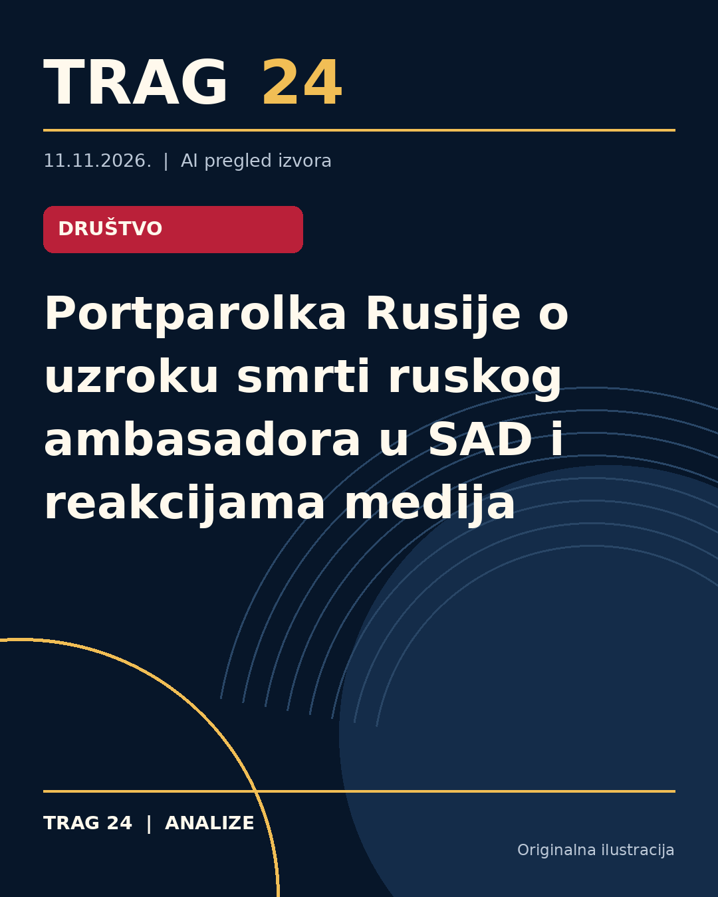

Portparolka Rusije o uzroku smrti ruskog ambasadora u SAD i reakcijama medija

ŠTA SE DOGODILO
Ruski ambasador u Sjedinjenim Državama Aleksandar Darčijev preminuo je u Moskvi u 66. godini života. Ministarstvo spoljnih poslova Rusije objavilo je da je njegova smrt nastupila iznenada, a prema navodima portparolke Marije Zaharove, uzrok je hronična bolest. Darčijev je bio u diplomatskoj službi i njegovo iznenadno preminuće izazvalo je niz reakcija na međunarodnoj sceni.
HRONOLOGIJA
Ministarstvo spoljnih poslova Rusije objavilo je vest o smrti Darčijeva u vreme intenzivnih diplomatskih pregovora u vezi sa Ukrajinom. Nakon zvaničnog saopštenja o smrti, portparolka Zaharova je izjavila da je stigao veliki broj poruka saučešća iz različitih zemalja. Takođe je reagovala na medijske navode iz Sjedinjenih Država koji su povezivali smrt ambasadora sa teorijama zavere, ocenjujući ih nepristojnim. Do sada nisu objavljeni detaljniji podaci o okolnostima njegove smrti.
ŠTA NAVODE IZVORI
Službene informacije iz Ministarstva spoljnih poslova Rusije i izjave Marije Zaharove potvrđuju da je Aleksandar Darčijev preminuo usled hronične bolesti. Zaharova naglašava da su dolazile saosećajne poruke saučešća, ali i da su američki mediji širili nepristojne teorije zavere u vezi sa smrću ruskog ambasadora. Izvori ukazuju na značaj ambasadorovog doprinosa i izražavaju tugu zbog njegovog odlaska.
ŠTA JE POTVRĐENO
Potvrđeno je da je Aleksandar Darčijev preminuo u 66. godini, uzrok smrti je hronična bolest prema podacima iz ruskog Ministarstva spoljnih poslova i Marije Zaharove. Pristigao je veliki broj poruka saučešća iz različitih delova sveta. Takođe je potvrđeno da je Zaharova reagovala na medijske spekulacije iz SAD koje su pratile smrt ambasadora, smatrajući ih neprimerenim.
ŠTA NIJE POTVRĐENO
Nije potvrđeno da li su postojali drugi faktori ili okolnosti koje su dovele do smrti Aleksandra Darčijeva osim hronične bolesti. Nema zvaničnih podataka koji potvrđuju tvrdnje američkih medija ili druge neosnovane teorije o uzroku smrti. Ne postoje detalji o tačnoj prirodi bolesti ili mestu i vremenu smrti osim opšteg saopštenja da je smrt iznenadna i da se dogodila u Moskvi.
ŠTA OSTАJE OTVORENO: Ostaje nejasno zašto je smrt ocenjena kao "iznenadna" budući da je naveden hronični uzrok bolesti, kao i da li je bilo neposrednih medicinskih detalja o poslednjim momentima života ambasadora. Takođe ostaje otvoreno pitanje reakcije i interpretacije američkih i drugih spoljnih medija na ovaj događaj, kao i da li će biti dodatnih zvaničnih informacija o smrti Aleksandra Darčijeva u budućnosti.
Izvori
- https://www.kurir.rs/planeta/10159810/ZAHAROVA-SE-OGLASILA-O-SMRTI-RUSKOG-AMBASADORA-U-SAD-Nepristojne-teorije-zavere-americkih-medija
- https://informer.rs/planeta/vesti/1169050/marija-zaharova-ruski-ambasador-uzrok-smrti
- https://www.novosti.rs/planeta/svet/1670253/zaharova-objavila-uzrok-smrti-ruskog-ambasadora-sad
Ova analiza je pripremljena uz pomoć veštačke inteligencije na osnovu javno dostupnih izvora. Navodi izvora nisu nužno nezavisno potvrđeni.